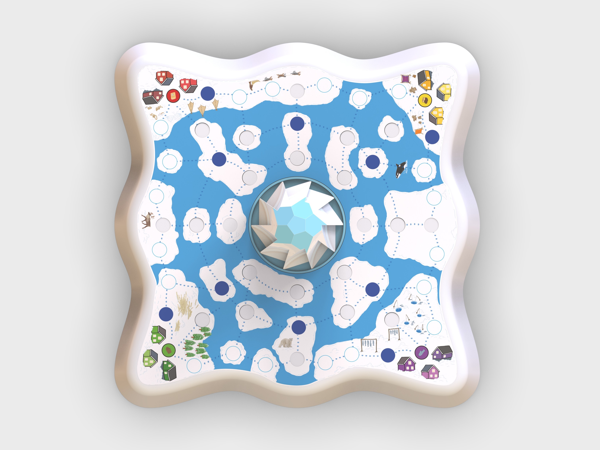
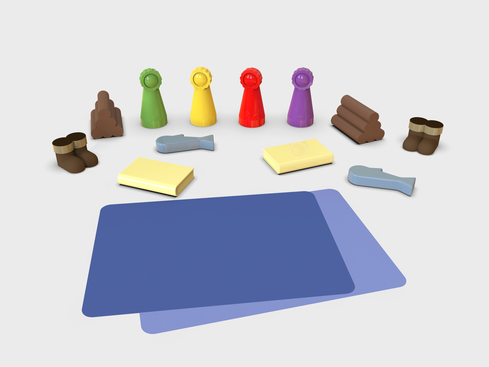
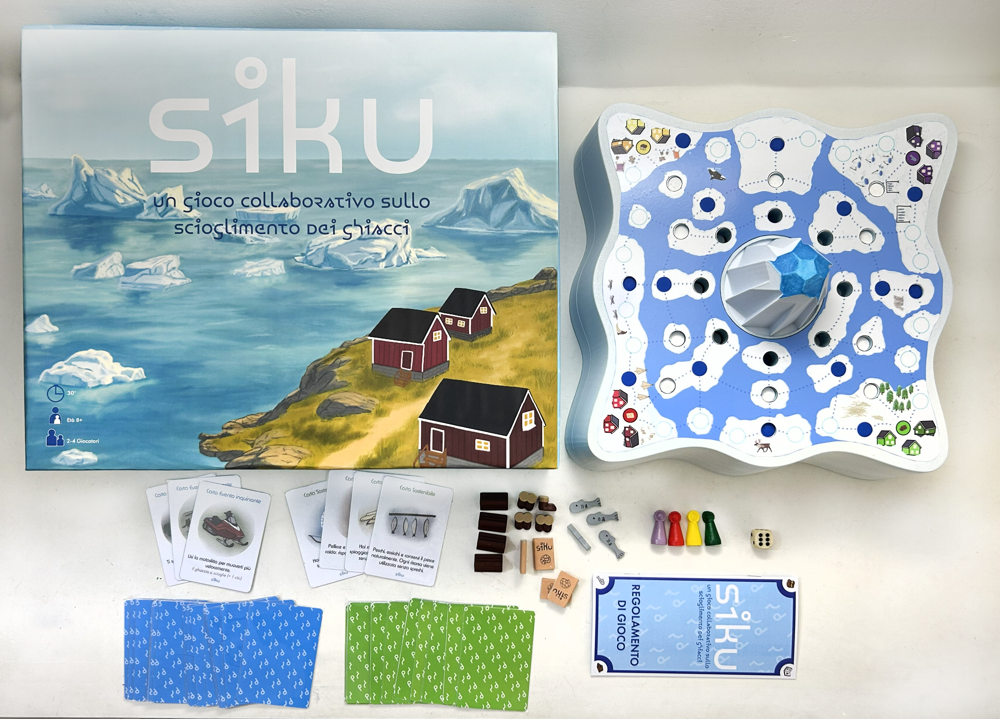
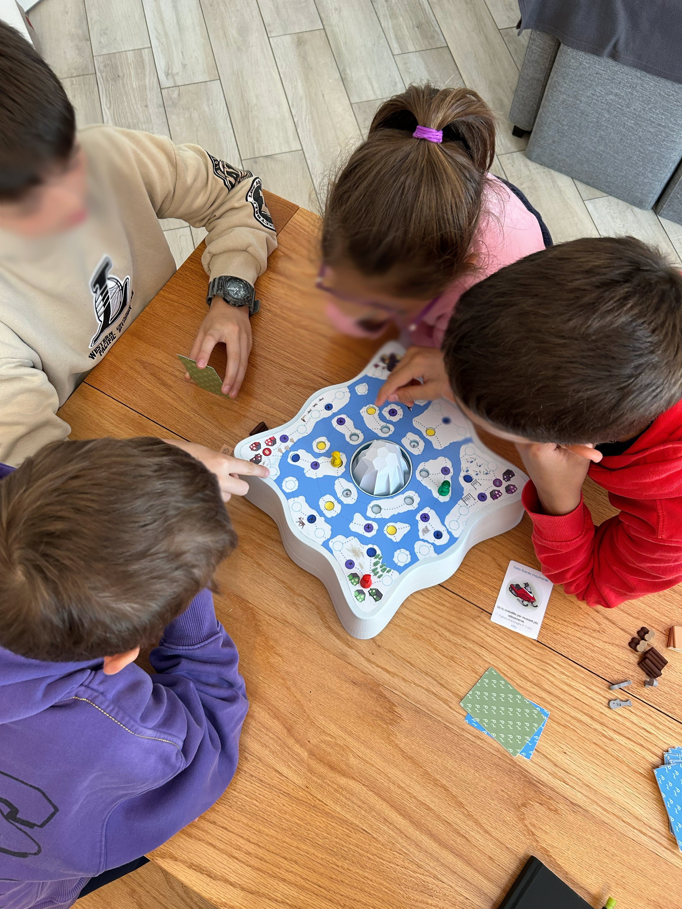

SIKU
KIDS BOARD GAME
YEAR: September 2025 – June 2026
DESIGNERS: Emma Listorto
MY ROLE & SKILLS: Concept development, 3D modelling, prototyping, product communication, technical drawings
COURSE: Final Design Studio – Design for Kids, Third Year, Politecnico di Milano
LECTURERS: B. Del Curto, B. Corbellini, F. Costa, M. Italia
BRIEF:
A product that helps 8–9 year olds understand the causes and consequences of climate change; particularly global warming.
SIKU is a board game for children aged 8 and up. Designed to playfully teach how polluting actions in everyday life impact the planet. Through an Arctic setting and an interactive iceberg that “melts” during the game, children learn to reason about the best route to take based on the environmental impact of the spaces. The goal of the game is collaborative: everyone must complete the journey around the board, returning home with resources; if they have melted too much of the ice, the game is lost.

COMPONENTS
The game and its internal mechanism are composed of:
- Lowering iceberg containing a channel with 9 notches that allow for a gradual lowering movement
- Game board with the playing area
- Wheels of different sizes forming the three concentric circles of spaces that can be lowered
- Main channel in which the iceberg channel is inserted and slides
- Main spring supporting all the wheels and the iceberg
- Pin sliding along the 9 notches and locking into position to regulate the different lowering levels
- Cap
- Screws
- Springs maintaining the distance between the three wheels
Every 3 clicks, one wheel is lowered, causing the corresponding spaces on the game board to disappear.


RENDERINGS




PROTOTYPE


COMMUNICATION


Brand identity, product placement simulation within Asmodee’s catalogue and packaging illustration and design.